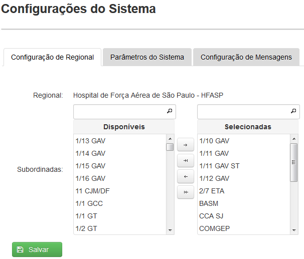
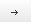
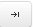
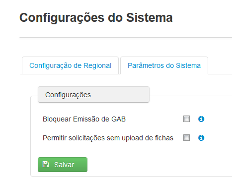
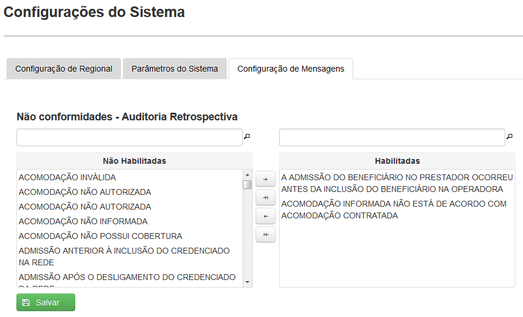

Apresenta três abas: Configuração de Regional, Parâmetros do Sistema e Configuração de Mensagens(Fig.45).

Fig.45 Tela 'Configurações do Sistema'
Permite que o usuário gerencie as Organizações Militares pertencentes a sua respectiva regional do FUNSA.
As alterações feitas nesta aba refletem na criação e edição de novos usuários e profissionais, visto que o campo Organização Militar presente nas duas telas apresenta as unidades selecionadas na aba Configuração de Regional.
Para vincular Organização Militar à Regional, o usuário pesquisa e seleciona uma ou várias (pressionando o botão CTRL) Organizações Militares da lista de disponíveis, clica no botão ()
Verifica se o(s) item(s) aparece(m) na lista de selecionadas e clica em Salvar. O sistema apresenta então uma mensagem de sucesso.
Caso o usuário queira adicionar todas as unidades disponíveis, pode-se usar o botão()para que sistema envie todas as Organizações Militares 'disponíveis' para a lista de 'selecionadas'.
Para desvincular Organização Militar de uma Regional, o usuário seleciona uma ou várias Organizações Militares da lista de 'selecionadas', clica no botão (), verifica se o(s) item(s) aparece(m) na lista de 'disponíveis'. Em seguida, clica em Salvar.
Caso o usuário queira remover todas as unidades selecionadas, pode-se usar o botão( )para que o sistema envie todas as Organizações Militares selecionadas para a lista de 'disponíveis'.
)para que o sistema envie todas as Organizações Militares selecionadas para a lista de 'disponíveis'.
Permite ao usuário bloquear a emissão de GABs e permitir que o usuário atendente crie solicitações de procedimento sem upload de fichas (fig. 46).

Fig.46 Aba 'Parâmetros do Sistema'
Para bloquear Emissão de GAB no sistema, caso seja necessário, o usuário marca a opção Bloquear Emissão de GAB. Por padrão, esta opção vem desmarcada.
O usuário pode ainda proibir que uma solicitação de procedimento seja enviada para a auditoria sem o upload da ficha de solicitação, desmarcando a opção Permitir solicitações sem upload de fichas.
Permite habilitar ou desabilitar as justificativas de Não Conformidades da Auditoria Retrospectiva.
